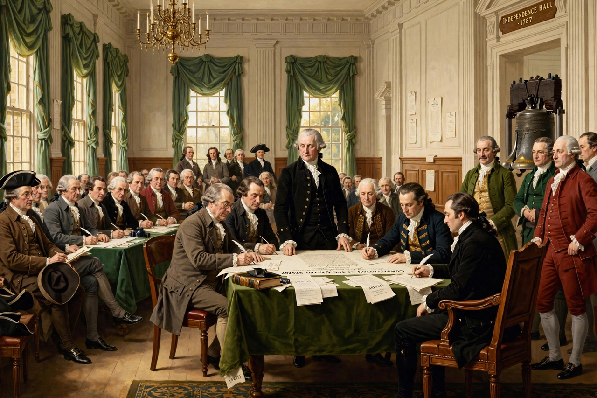

Limited government
From Wikipedia, the free encyclopedia

Limited government is a political principle that a government's power is restricted by law — usually a written Constitution — to protect individual rights and liberties. Rooted in liberal thought from John Locke and Montesquieu to the American founders, it is enforced through constitutionalism, the Separation of powers, Federalism, enumerated powers and judicial review.
Origins
The idea develops from medieval limits on kingship — Magna Carta (1215), the common law — through Locke's Second Treatise (1689), in which government rests on consent and holds power in trust for protecting life, liberty and property, and Montesquieu's The Spirit of the Laws (1748) on separated powers. The United States Constitution (1788) operationalised the theory: a federal government of enumerated powers, checked among three branches, with the Tenth Amendment reserving the rest to states or the people.
Mechanisms
Limited government is maintained by constitutional supremacy and amendment difficulty; independent courts exercising Judicial review; bills of rights (incorporated against US states); elections and term limits; and fiscal rules. Political traditions differ on scope: classical liberals and libertarians read limits narrowly (night-watchman state), while modern liberals accept a larger state still bounded by rights and law.
Critiques
Critics argue formal limits are porous (emergency powers, delegation to agencies, judicial self-restraint failures), that extreme limitation prevents addressing collective problems, and that 'limited government' rhetoric can mask deregulation benefiting private power. Defenders reply that dispersed power remains the surest safeguard of liberty.